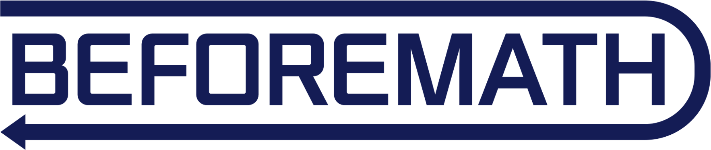
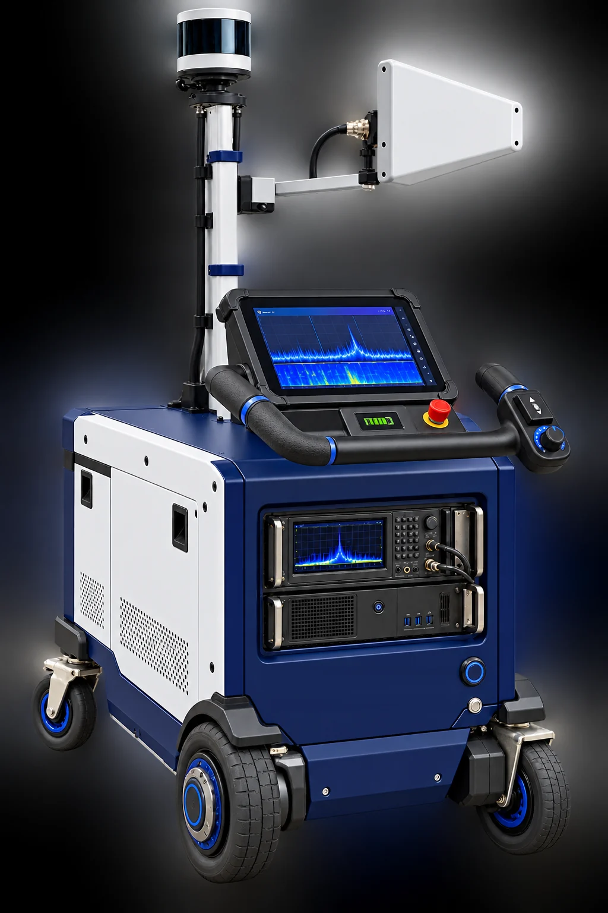

늘어나는 무선통신기기, 설비의 안전한 자리를 찾습니다.
해결하려는 문제
무선통신기기는 늘어나는데,그 전자파가 주변 기기에 주는 영향은 확인하기 어렵습니다.
정밀 기기 곁에 무선통신기기가 늘어나는 현장이라면,설비에 미치는 영향을 살펴볼 필요가 있습니다.
여러 지점의 측정값을 위치와 함께 기록해, 방 안의 전자파 분포를 분석할 근거를 만듭니다.
가끔 나타나는 강한 전자파와 시간에 따른 변화는 짧은 한 번의 측정으로 담기 어렵습니다.
측정 조건을 기록해 두어야, 설치 전후나 설비가 바뀐 뒤의 결과를 견주어 볼 수 있습니다.
방 안의 전자파를 위치·시간과 함께 측정해 지도로 만들고, PS-LTE 안테나 같은 무선통신기기를 둘 위치를 검토 조건과 함께 지도 위에 제시합니다.
받는 결과전자파 분포 지도 · 설치 제시 위치와 검토 조건 · 측정 기록
현장의 전자파가 주변 설비에 주는 영향을 설비의 내성 자료와 적용 기준에 비추어 평가하고, 보고서로 정리합니다. 평가 대상·범위와 진행 절차는 별도로 협의합니다.
받는 결과평가 보고서 · 근거 자료
서비스 01현장 협의 → 맵핑 측정 → 분석 → 제시와 정리
서비스 02범위 협의 → 자료 확인 → 현장 측정 → 평가와 보고
↻전자파 환경에 영향을 줄 수 있는 변경이 생기면, 변경 내용과 이전 측정 조건을 바탕으로 재검토 범위를 협의합니다.
결과물
업무별 결과물의 구성을 개념 예시로 보여 드립니다.
전자파 분포와 설치 제시 위치 · 개념 예시 · 가상 공간 · 설명용 전계값
점을 눌러 보세요
색은 전계 세기의 표시 구간이며, 기준 초과나 위험 여부를 뜻하지 않습니다.
실제 현장 측정값이 아닌 가상 예시입니다. 흰색 안테나는 설치 위치 제시 결과를 지도에 표시하는 방식을 보여 주며, 평가 계산으로 도출한 결과가 아닙니다. 예시 비교값은 내성 10 V/m 설비에 8 dB 여유를 가정한 값(132.0 dBµV/m, 약 3.98 V/m)입니다.
자료가 부족한 항목은 추가 확인이 필요한 항목으로 남깁니다.
기술
위치 제시에 쓰는 측정·기록 방식과,장비·분석 기술을 소개합니다.

이동형 전파환경 자동 측정 장비 · 개발 콘셉트위치 연동 · 지정시간 연속 측정 · 분포 지도
측정 시간이 짧으면, 가끔 나타나는 강한 신호를 보지 못할 수 있습니다. 실제 현장에서는 이런 신호가 있는지 측정하기 전에는 알 수 없습니다.
같은 가상 신호를 5분만 본 것과 60분 이어서 본 것을 나란히 봅니다.
가상 신호로 만든 설명용 예시이며, 기술 성능을 나타내지 않습니다. 실제 값은 환경마다 다릅니다.
측정하지 못한 곳을 예측하고, 오차 범위를 함께 보여 주는 기능을 개발합니다.
한마디로, 내비게이션의 예상 도착 시간을 실제 주행 기록으로 계속 고치는 것과 같습니다.
대상 설비의 내성 자료와 적용 기준(예: 미국 NRC RG 1.180의 8 dB 여유)에 비추어 여유를 검토합니다.
한마디로, 다리의 안전 하중이 10톤이면 그보다 훨씬 가벼운 차만 지나가게 하는 것과 같습니다.
측정 결과의 근거 기록과 검토 이력을 남기고, 안전 계측제어망과는 분리해 운영하도록 설계합니다.
한마디로, 모든 숫자에 영수증을 붙여 두고 중요한 설비의 망과는 출입문을 따로 두는 것과 같습니다.
왜 원전부터인가?
국내 운영 원전의 기존 방부터 시작해,검증 결과에 따라 적용 범위를 넓혀 갑니다.
국내 원전 운영사 무선통신 인프라 공개 자료 · 미국 NRC RG 1.180 Rev.2(2019) · 원자력안전위원회 계속운전 허가 의결(2026.10.27 보도)
이후 확장 방향데이터센터 · 신재생에너지 발전소 · 스마트 공장
BEFOREMATH의 미래
축적한 전자파 데이터를 설비 상태 예측으로 이어 갑니다.
E-ORACLE
설비별 평소의 전자파 상태를 학습하고, 평소와 다른 변화를 찾아 알리는 AI 예지보전 시스템을 만들어 갑니다.
오랜 기간의 측정 이력과 설비 이력을 쌓고, 독립된 검증을 거쳐 완성해 갑니다.
회사 정보 · 문의
전자파 맵핑 · 환경영향평가 · AI 예지보전